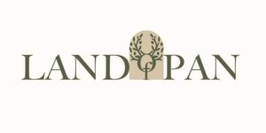

Trade Mark Journal No.2026/006 6 February 2026
WO0000001892110 (29,30,31,35,41,43)
Office of origin: Greece
Date of International Registration:16 June 2025
Date of designation in the UK:
16 June 2025

The mark contains the colours olive green (Hex: #2F5534), white (Hex: #FFFFFF) and beige (Hex: #DCD6BC).
- Class 29
- Oils and fats, edible oils and fats.
- Class 30
- Sugar, natural sweeteners, sweet coatings and fillings, beekeeping products and edible decorations; processed herbs; dried herbs; preserved herbs; culinary herbs, spices; herbal honey; garden herbs, preserved (flavourings); dried herbs for culinary purposes; herbal preparations for beverages; herbal honey pastes; herbal tea, not for medicinal use.
- Class 31
- Plants for breeding; animals for breeding; agricultural crops and aquacultural, horticultural and forestry products; plants; fresh herbs; raw herbs.
- Class 35
- Retail and wholesale services connected with the sale of olive oil; retail and wholesale services connected with the sale of olive oil via internet; retail and wholesale services connected with the sale of honey; retail and wholesale services connected with the sale of honey.
- Class 41
- Education, entertainment and sports services.
- Class 43
- Information, advice and reservation services for temporary accommodation; information, advice and reservation services for the provision of food and drink.
GAIIOCHOS P.C.
Representative: Manolis Heliotis, 1 Soane Square,, Bentley Priory, Stanmore, London HA7 3GB, UNITED KINGDOM